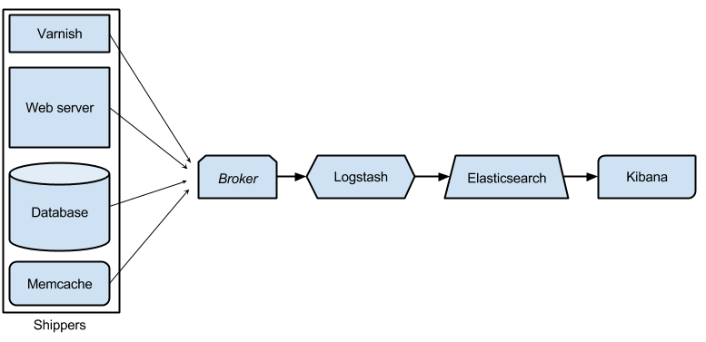

ELK in a Box
Logs you will actually look at
James Fuller
d.o: fullerja | @webJWF
Follow along at: http://rawgit.com/jwfuller/elk_in_a_box/master/index.html#/
Morning!
- I work at CU Boulder
- We run a Drupal instance that currently has ~500 sites
- Our production cluster has ~18 servers that all have logs
- There is also DEV, TEST and STAGE...
Logging and its woes
- Everything has a log
- There are millions of lines of logs
- They are all over the place
- No one reads any of them unless something goes wrong
- You need grep and pipe voodoo to find what you are looking for
Enter ELK

http://www.lalocadelosgatos.com/wp-content/uploads/2012/10/gato-disfraz-ciervo.jpeg
{kind=link}
Elasticsearch
- Distributed, multitenant-capable full-text search engine built on Apache Lucene
- Provides a RESTful web interface and schema-free JSON documents
logstash
- Tool for receiving, processing and outputting logs.
- Yep, all the logs.
Kibana
- Browser based analytics and search dashboard for Elasticsearch
- It's pretty
Flow of Information
Get Em: Shipper
- Logstash-forwarder (formerly known as Lumberjack)
- Syslog and friends (rsyslog, syslog-ng, etc.)
- Lots of other options
Hold Em: Broker
You don't have to use a broker, but...
- Enhances performance of the indexer
- Provides some resiliency if the indexer goes down.
Redis is commonly used as a broker
Chop Em: Indexer
Logstash has three basic parts
- Input - where is this coming from?
- Syslog, File, Twitter, etc.
- Filter - break monolithic messages into data
- Grok, date, geoip, mutate, etc.
- Output - what should we do with the events after we chop?
- Elasticsearch, a ton of messaging protocols, other databases
Store Em: Index
- Logstash creates indicies
- Indicies are divided into Shards
- Shards are replicated across Nodes
Make it pretty: Visualization
Types include:
- Bar, line, pie and dounut charts
- Data tables
- Maps
Logstash
Input
input {
lumberjack {
port => 5043
ssl_certificate => "/usr/local/openssl/certs/crt/logstash-forwarder-selfsigned.crt"
ssl_key => "/usr/local/openssl/certs/key/logstash-forwarder.key"
}
file {
path => "/var/log/drupal/*"
exclude => [ "*.gz]
type => "drupal"
}
file {
type => "mysql-slow"
path => "/var/log/mysql/mysql-slow.log"
codec => multiline {
pattern => "^# User@Host:"
negate => true
what => previous
}
}
}
Filter - Apache
filter {
if [type] == "access" {
grok {
match => {
"message" => '%{IPORHOST:first_ip}? %{COMBINEDAPACHELOG}'
}
}
date {
locale => "en"
match => [ "timestamp" , "dd/MMM/yyyy:HH:mm:ss Z" ]
timezone => "America/Denver"
target => ["@timestamp"]
add_tag => [ "tmatch" ]
}
mutate {
rename => [ "clientip", "varnish_ip"]
rename => [ "first_ip", "client_ip"]
convert => [ "bytes", "integer" ]
}
geoip {
source => "client_ip"
}
}
}
Grok
From the logstash docs:
Grok is currently the best way in logstash to parse crappy unstructured log data into something structured and queryable.
Grok
Grok pattern include:
- Integers, Numbers, Words, Spaces
- IPv4, IPv6, MAC addresses
- URIs, Pathes (unix and windows)
- Whole mess of date/timestamp components and formats
- Common log formats: Syslog, Apache, Ruby, Java
Filter - Apache
filter {
if [type] == "access" {
grok {
match => {
"message" => '%{IPORHOST:first_ip}? %{COMBINEDAPACHELOG}'
}
}
date {
locale => "en"
match => [ "timestamp" , "dd/MMM/yyyy:HH:mm:ss Z" ]
timezone => "America/Denver"
target => ["@timestamp"]
add_tag => [ "tmatch" ]
}
mutate {
rename => [ "clientip", "varnish_ip"]
rename => [ "first_ip", "client_ip"]
convert => [ "bytes", "integer" ]
}
geoip {
source => "client_ip"
}
}
}
Filter - Varnish
filter {
if [type] == "varnishncsa" {
grok {
match => [
"message",
"%{SYSLOGBASE2} %{WORD:varnish_handling} %{IP:varnish_forwarded_for_ip} %{COMBINEDAPACHELOG}"
]
remove_field => [ "program" ]
}
mutate {
convert => [ "bytes", "integer" ]
convert => [ "response", "integer" ]
}
}
}
Filter - Drupal Syslog
filter {
if [type] == "drupal_syslog" {
grok {
match => {
"message" =>
'%{SYSLOGBASE} %{URI:drupal_base_url}\|%{INT:drupal_unix_timestamp}\|%{DATA:drupal_category}\|%{IP:ip}\|%{URI:drupal_request_url}\|(?:%{URI:drupal_referrer}|)\|%{INT:drupal_uid}\|(?:%{URI:drupal_link}|)\|%{GREEDYDATA:drupal_message}' }
}
mutate {
gsub => [ "drupal_category", "\s", "_"]
add_field => { "signal" => "signal" }
}
}
Filter - MySQL Slow Queries
filter {
if [type] == "mysql" {
grok {
match => [ "message", "^# User@Host: %{USER:user}(?:\[[^\]]+\])?\s+@\s+%{HOST:host}?\s+\[%{IP:ip}?\]" ]
}
grok {
match => [ "message", "^# Query_time: %{NUMBER:duration:float}\s+Lock_time: %{NUMBER:lock_wait:float} Rows_sent: %{NUMBER:results:int} \s*Rows_examined: %{NUMBER:scanned:int}"]
}
grok {
match => [ "message", "^SET timestamp=%{NUMBER:timestamp};" ]
}
date {
match => [ "timestamp", "UNIX" ]
}
}
}
Outputs
output {
if [type] == 'access' {
elasticsearch {
index => "logstash-access-%{+YYYY.MM.dd}"
host => "welastic.colorado.edu"
}
} else if [type] == 'drupal_syslog' {
elasticsearch {
index => "logstash-drupal_syslog-%{+YYYY.MM.dd}"
host => "welastic.colorado.edu"
}
} else if [mysql] == "mysql" {
elasticsearch {
index => "logstash-mysql-%{+YYYY.MM.dd}"
host => "welastic.colorado.edu"
}
} else if [varnishncsa] == "varnishncsa" {
elasticsearch {
index => "logstash-varnishncsa-%{+YYYY.MM.dd}"
host => "welastic.colorado.edu"
}
} else {
elasticsearch {
host => "welastic.colorado.edu"
}
}
}
Elasticsearch
curl 'localhost:9200/_cat/health?v'
epoch timestamp cluster status node.total node.data shards pri relo init unassign
1394735289 14:28:09 elasticsearch yellow 1 1 5 5 0 0 5
curl 'localhost:9200/_cat/indices?v'
health status index pri rep docs.count docs.deleted store.size pri.store.size
green open varnish 5 0 11434 0 64mb 32mb
green open access 5 0 2030 0 5.8mb 5.8mb
green open mysql 5 0 1054 0 8 8mb 45mb
green open drupal 5 0 12030 0 1.2G 1.2G